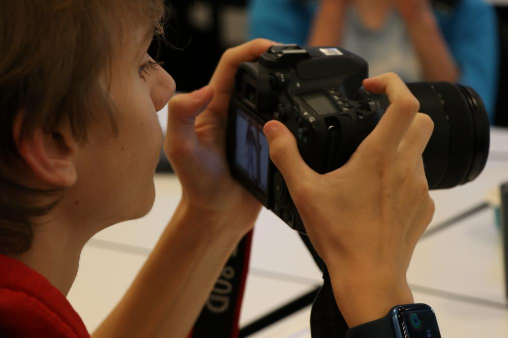
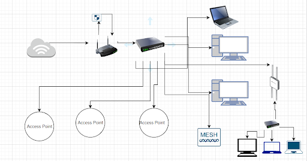

Informasjons teknologi og medie
Her kan du se og lese om visse informasjon om it og medie linjen siene fag fra syne til en elev
Itileg til fakta
Realfag
Når det kommer til realfag har vi ikke så mye, ved grund av at vi har delt in engelsk og norsk in i to år. Så det kansje dobelt så mye engelsk men det føles ikke mye ut bare mye lekser
I natur fag er det veldig lite fordi vi har 1 til 2 timmer i ukken itileg til at det er gøyt.
Matte er lit det samme som ungomskollen men vanskliere.
Konseptutvikling og programering
Eg eksker dette faget, det mangler lekser lærere vet ikke altit og fører deg til å undersøke og fårstå ting alene. Dette fører til at du virkelig forstår det.
I tileg er det ikke bare et svar til problem løsning.
produksjon og historieforteling
ved dette faget bruker man pc og film utsyr som kamera og adobe pakken. Det er drøm komme san det er kjempe font å bruke kamera, men det å bare få adobe er det beste.
teknologiforståelse
Teknologiforståelse er en mix av programering og medie i fras mitt perspektiv
dette er fordi vi har om it relevante informsjon som er viktig å kune med programering og fordi vi bruker kamera og lærer om hvordan det fungerer.